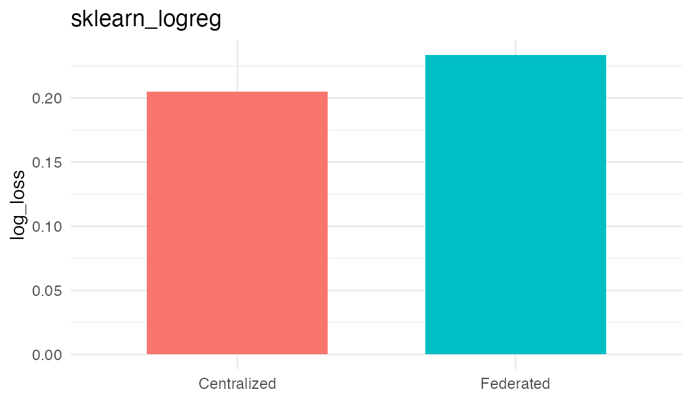

Validation: sklearn_logreg
validation-sklearn-logreg.RmdThis vignette records a live validation of the method against a centralized baseline. The federated run used three Opal/Rock nodes and the same pooled synthetic validation cohort was used for the local baseline. The purpose is method-path validation: data staging, template verification, Flower execution, result persistence, and cleanup. It is not a clinical performance benchmark.
overview <- data.frame(
Field = c(
'method', 'task', 'target', 'n_features', 'rounds',
'centralized_metric', 'centralized_loss', 'centralized_accuracy',
'federated_status', 'federated_loss', 'federated_n_failures',
'delta_loss', 'acceptance_max_loss_ratio',
'acceptance_max_loss_margin', 'acceptable_loss',
'validation_status'
),
Value = c(
row$method, row$task, row$target, row$n_features, row$rounds,
row$centralized_metric, fmt(row$centralized_loss), fmt(row$centralized_accuracy),
row$federated_status, fmt(row$federated_loss), fmt(row$federated_n_failures),
fmt(row$delta_loss), fmt(row$acceptance_max_loss_ratio),
fmt(row$acceptance_max_loss_margin), row$acceptable_loss,
row$validation_status
)
)
knitr::kable(overview)| Field | Value |
|---|---|
| method | sklearn_logreg |
| task | classification |
| target | outcome |
| n_features | 12 |
| rounds | 1 |
| centralized_metric | log_loss |
| centralized_loss | 0.2051 |
| centralized_accuracy | 0.9074 |
| federated_status | ok |
| federated_loss | 0.2335 |
| federated_n_failures | 0.0000 |
| delta_loss | 0.0283 |
| acceptance_max_loss_ratio | 2.5000 |
| acceptance_max_loss_margin | 0.2500 |
| acceptable_loss | TRUE |
| validation_status | pass |
loss_df <- data.frame(
mode = c('Centralized', 'Federated'),
loss = c(row$centralized_loss, row$federated_loss)
)
loss_df <- loss_df[is.finite(loss_df$loss), , drop = FALSE]
if (nrow(loss_df) > 0 && requireNamespace('ggplot2', quietly = TRUE)) {
ggplot2::ggplot(loss_df, ggplot2::aes(x = mode, y = loss, fill = mode)) +
ggplot2::geom_col(width = 0.65, show.legend = FALSE) +
ggplot2::labs(x = NULL, y = row$centralized_metric[[1]], title = method_id) +
ggplot2::theme_minimal(base_size = 11)
} else {
plot.new()
text(0.5, 0.5, 'No federated loss available for this method')
}
Step-By-Step Run Output
The following chunks print the audit trail for the actual run stored
in inst/extdata/dsflower_method_validation_results.json.
They are evaluated when pkgdown renders the vignette, so the page shows
the concrete centralized and federated outputs rather than only
describing the API shape.
target_cols <- trimws(strsplit(row$target, ',', fixed = TRUE)[[1]])
site_table_paths <- validation$table_paths
input_trace <- data.frame(
step = c(
'1. Build validation cohort',
'2. Split across sites',
'3. Select task target',
'4. Select model features',
'5. Materialize Opal tables'
),
observed_output = c(
paste(validation$n_total, 'synthetic rows generated for this suite'),
paste(validation$n_sites, 'sites x', validation$n_per_site, 'rows per site'),
paste(target_cols, collapse = ', '),
paste(row$n_features, 'features:', paste0('x1..x', row$n_features)),
paste(site_table_paths, collapse = '\n')
),
stringsAsFactors = FALSE
)
knitr::kable(input_trace)| step | observed_output |
|---|---|
| 1. Build validation cohort | 270 synthetic rows generated for this suite |
| 2. Split across sites | 3 sites x 90 rows per site |
| 3. Select task target | outcome |
| 4. Select model features | 12 features: x1..x12 |
| 5. Materialize Opal tables | dsflower_demo.method_validation_20260512162133_site1 |
dsflower_demo.method_validation_20260512162133_site2 dsflower_demo.method_validation_20260512162133_site3 |
centralized_output <- data.frame(
step = c(
'1. Load pooled validation cohort',
'2. Train centralized baseline',
'3. Evaluate centralized baseline'
),
observed_output = c(
paste(validation$n_total, 'pooled rows with', row$n_features, 'features'),
paste('status =', row$centralized_status, '| metric =', row$centralized_metric),
paste('loss =', fmt(row$centralized_loss),
'| accuracy =', fmt(row$centralized_accuracy))
),
stringsAsFactors = FALSE
)
knitr::kable(centralized_output)| step | observed_output |
|---|---|
| 1. Load pooled validation cohort | 270 pooled rows with 12 features |
| 2. Train centralized baseline | status = ok | metric = log_loss |
| 3. Evaluate centralized baseline | loss = 0.2051 | accuracy = 0.9074 |
cat(
sprintf('[centralized] method: %s\n', row$method),
sprintf('[centralized] task: %s | target: %s | features: %s\n',
row$task, row$target, paste0('x1..x', row$n_features)),
sprintf('[centralized] status: %s\n', row$centralized_status),
sprintf('[centralized] %s: %.4f\n', row$centralized_metric, row$centralized_loss),
sprintf('[centralized] accuracy: %s\n', fmt(row$centralized_accuracy)),
sep = ''
)
#> [centralized] method: sklearn_logreg
#> [centralized] task: classification | target: outcome | features: x1..x12
#> [centralized] status: ok
#> [centralized] log_loss: 0.2051
#> [centralized] accuracy: 0.9074
max_allowed_loss <- row$centralized_loss * row$acceptance_max_loss_ratio +
row$acceptance_max_loss_margin
dsflower_output <- data.frame(
step = c(
'1. Login through DataSHIELD',
'2. Prepare server-side dsFlower nodes',
'3. Start Flower SuperLink/SuperNodes',
'4. Run federated training',
'5. Collect metrics and cleanup'
),
observed_output = c(
paste(validation$n_sites, 'Opal/Rock nodes connected'),
paste('template =', row$method, '| privacy =', validation$privacy_profile),
paste('federated_run_id =', row$federated_run_id),
paste('rounds =', row$rounds, '| federated_loss =', fmt(row$federated_loss),
'| client_failures =', fmt(row$federated_n_failures)),
paste('federated_status =', row$federated_status,
'| validation_status =', row$validation_status)
),
stringsAsFactors = FALSE
)
knitr::kable(dsflower_output)| step | observed_output |
|---|---|
| 1. Login through DataSHIELD | 3 Opal/Rock nodes connected |
| 2. Prepare server-side dsFlower nodes | template = sklearn_logreg | privacy = sandbox_open |
| 3. Start Flower SuperLink/SuperNodes | federated_run_id = 4674434193954368452 |
| 4. Run federated training | rounds = 1 | federated_loss = 0.2335 | client_failures = 0.0000 |
| 5. Collect metrics and cleanup | federated_status = ok | validation_status = pass |
cat(
sprintf('[dsFlower] DataSHIELD login: %s nodes\n', validation$n_sites),
sprintf('[dsFlower] table paths: %s\n', paste(site_table_paths, collapse = ' | ')),
sprintf('[dsFlower] model: %s | strategy: fedavg | rounds: %s\n',
row$method, row$rounds),
sprintf('[dsFlower] run id: %s\n', row$federated_run_id),
sprintf('[Flower] aggregate_fit/evaluate: clients=%s failures=%s\n',
validation$n_sites, fmt(row$federated_n_failures)),
sprintf('[Flower] final federated loss: %.4f\n', row$federated_loss),
sprintf('[cleanup] status: %s\n', row$federated_status),
sep = ''
)
#> [dsFlower] DataSHIELD login: 3 nodes
#> [dsFlower] table paths: dsflower_demo.method_validation_20260512162133_site1 | dsflower_demo.method_validation_20260512162133_site2 | dsflower_demo.method_validation_20260512162133_site3
#> [dsFlower] model: sklearn_logreg | strategy: fedavg | rounds: 1
#> [dsFlower] run id: 4674434193954368452
#> [Flower] aggregate_fit/evaluate: clients=3 failures=0.0000
#> [Flower] final federated loss: 0.2335
#> [cleanup] status: ok
acceptance_output <- data.frame(
centralized_loss = row$centralized_loss,
federated_loss = row$federated_loss,
max_allowed_loss = max_allowed_loss,
federated_n_failures = row$federated_n_failures,
acceptable_loss = row$acceptable_loss,
validation_status = row$validation_status
)
knitr::kable(acceptance_output, digits = 4)| centralized_loss | federated_loss | max_allowed_loss | federated_n_failures | acceptable_loss | validation_status |
|---|---|---|---|---|---|
| 0.2051 | 0.2335 | 0.7629 | 0 | TRUE | pass |
Inline Execution Path
The validation row above was generated by running this method through the same inline DataSHIELD/Flower flow shown below. The vignette does not delegate execution to an external launcher; the rendered result is loaded from the versioned JSON artifact written by the live run.
library(DSI)
library(DSOpal)
library(dsFlowerClient)
library(opalr)
opal_urls <- trimws(strsplit(Sys.getenv(
'DSFLOWER_OPAL_URLS',
'https://localhost:8443,https://localhost:8444,https://localhost:8445'
), ',', fixed = TRUE)[[1]])
opal_users <- rep(Sys.getenv('OPAL_USER', 'administrator'), length(opal_urls))
opal_passwords <- rep(Sys.getenv('OPAL_PASSWORD', 'admin123'), length(opal_urls))
project <- Sys.getenv('DSFLOWER_DEMO_PROJECT', 'dsflower_demo')
set.seed(4242)
n_sites <- length(opal_urls)
n_per_site <- validation$n_per_site
n <- n_sites * n_per_site
p <- row$n_features
x <- scale(matrix(stats::rnorm(n * p), nrow = n, ncol = p))
colnames(x) <- paste0('x', seq_len(p))
cohort <- data.frame(id = sprintf('mv_%04d', seq_len(n)), x)
cohort$outcome <- as.integer(0.9 * x[, 1] - 0.7 * x[, 2] +
0.45 * x[, 3] + stats::rnorm(n, sd = 0.4) > 0)
cohort$y <- 1.4 * x[, 1] - 1.1 * x[, 4] + 0.5 * x[, 7] +
stats::rnorm(n, sd = 0.45)
cohort$class3 <- as.integer(cut(x[, 2] - 0.5 * x[, 5] + 0.35 * x[, 8],
breaks = stats::quantile(
x[, 2] - 0.5 * x[, 5] + 0.35 * x[, 8],
probs = c(0, 1 / 3, 2 / 3, 1)
), include.lowest = TRUE, labels = FALSE)) - 1L
cohort$label_a <- as.integer(x[, 1] + x[, 6] + stats::rnorm(n, sd = 0.5) > 0)
cohort$label_b <- as.integer(-x[, 2] + x[, 7] + stats::rnorm(n, sd = 0.5) > 0)
cohort$label_c <- as.integer(x[, 3] - x[, 8] + stats::rnorm(n, sd = 0.5) > 0)
cohort$count <- stats::rpois(n, lambda = exp(pmin(pmax(0.2 + 0.35 * x[, 1] -
0.25 * x[, 9], -2), 2)))
cohort$time <- exp(2.0 - 0.25 * x[, 1] + 0.18 * x[, 5] +
stats::rnorm(n, sd = 0.35))
cohort$event <- as.integer(stats::runif(n) > 0.35)
cohort$event_type <- ifelse(cohort$event == 0L, 0L,
ifelse(0.6 * x[, 10] - 0.45 * x[, 11] > 0, 1L, 2L))
cohort$site <- rep(seq_len(n_sites), length.out = n)
table_paths <- character(n_sites)
for (i in seq_len(n_sites)) {
opal <- opalr::opal.login(
username = opal_users[[i]], password = opal_passwords[[i]],
url = opal_urls[[i]],
opts = list(ssl_verifyhost = 0L, ssl_verifypeer = 0L)
)
table_name <- paste0('method_validation_', method_id, '_site', i)
site_data <- cohort[cohort$site == i, setdiff(names(cohort), 'site'), drop = FALSE]
opalr::opal.table_save(opal, site_data, project = project, table = table_name,
id.name = 'id', policy = 'generate',
overwrite = TRUE, force = TRUE)
table_paths[[i]] <- paste(project, table_name, sep = '.')
opalr::opal.logout(opal)
}
builder <- DSI::newDSLoginBuilder()
for (i in seq_len(n_sites)) {
builder$append(server = paste0('opal', i), url = opal_urls[[i]],
user = opal_users[[i]], password = opal_passwords[[i]],
table = table_paths[[i]], driver = 'OpalDriver')
}
conns <- DSI::datashield.login(builder$build(), assign = TRUE, symbol = 'D')
targets <- trimws(strsplit(row$target, ',', fixed = TRUE)[[1]])
features <- paste0('x', seq_len(row$n_features))
fit <- ds.flower.fit(
conns,
symbol = 'D',
target = targets,
features = features,
model = row$method,
strategy = 'fedavg',
privacy = 'sandbox_open',
rounds = row$rounds,
task = row$task
)
post_caps <- DSI::datashield.aggregate(
conns, as.symbol('flowerGetCapabilitiesDS')
)
DSI::datashield.logout(conns)
history <- fit$history
federated_loss <- tail(stats::na.omit(as.numeric(history$loss)), 1)
federated_failures <- max(as.numeric(history$n_failures), na.rm = TRUE)
acceptable <- federated_failures == 0 &&
federated_loss <= row$centralized_loss * row$acceptance_max_loss_ratio +
row$acceptance_max_loss_margin
acceptable